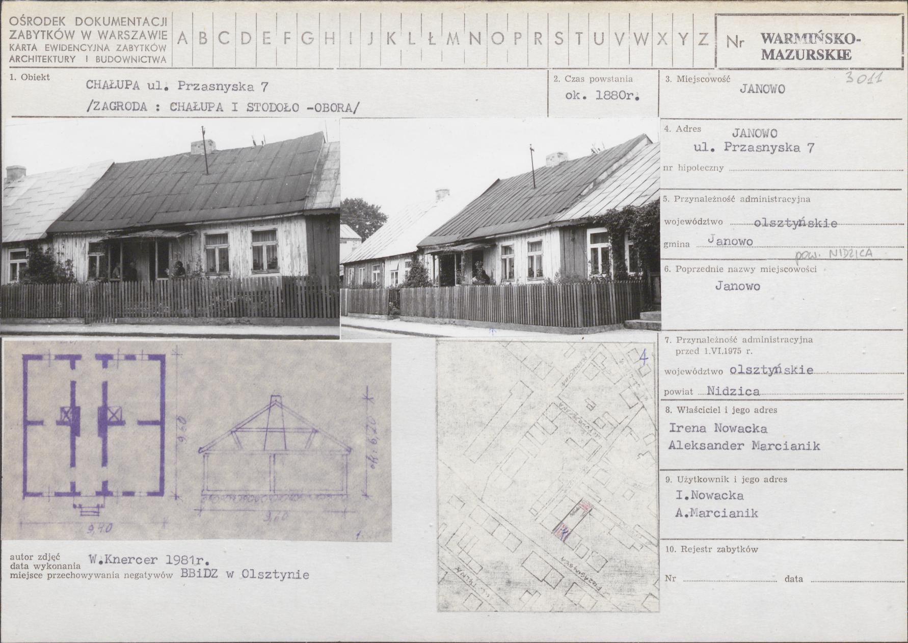
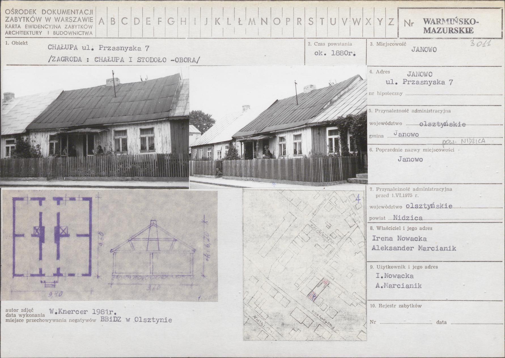

| Strona główna | Dlaczego genealogia? | Gdzie szukać? | Na co uważać? | Drzewo genealogiczne | Historia mojej rodziny | Kontakt |
Nie udało mi się ustalić, kiedy oraz skąd przybyli Pisarscy do Janowa. Wiadomo tylko, że okoliczne ziemie zamieszkiwała szlachta herbu Jastrzębiec, do którego zaliczał się ród Psarskich z Małopolski. Możliwe, że sprowadzili się na północne Mazowsze razem z Dzierzgowskimi również herbu Jastrzębiec, którzy założyli niedaleko Dzierzgowo. W wyniku przekręcenia nazwiska zaczęli się nazywać Pisarscy.

Najstarsza wzmianka o Pisarskich z Janowa pochodzi z akt wizytacji parafii janowskiej w 1781 roku. W punkcie 19 zanotowano datek na miejscowe kółko różańcowe ofiarowanych przez Mariannę - wdowę po Szymonie Pisarskim, natomiast w punkcie 21 przez Macieja Pisarskiego. W spisie właścicieli domów z 1808 roku zapisano, że Pisarscy posiadali aż 7 domów. Byli to Maciej, Bonawentury, Józef, Michał, Piotr, Florian, Wiktoria - wdowa po Szymonie, i kolejny Józef.
Można z tego i innych rzeczy wywnioskować, że Pisarscy już wtedy od bardzo dawna mieszkali w Janowie, przynajmniej 4 pokolenia. Zatem początki Pisarskich w Janowie sięgają przynajmniej 2 połowy XVII wieku, czyli czasów po potopie szwedzkim (1655-1660).

Większość Pisarskich w tym czasie zajmowała się rolnictwem. Wyróżnić tutaj trzeba Piotra Pisarskiego, które na przełomie XVIII i XIX wieku był rajcą miejskim oraz piwowarem. Z przekazów ustnych wiadomo również, że mój 4xpradziadek Franciszek Pisarski posiadał pole po stronie niemieckiej w Komorowie. Z racji tego prawie codziennie przekraczał granicę i wykorzystywał to do prowadzenia kontrabandy. Miejscowi Żydzi za pomoc w handlu przezwali go Kochme, co znaczy po żydowsku sprytny. Do dziś jedna z gałęzi rodzina nazywana jest Kochmonami. Oprócz Janowa sporo Pisarskich mieszkało po stronie pruskiej, na przykład w Komorowie, Rogu i Wichrowcu. Było to spowodowane najpewniej 2 czynnikami:

W wyniku rozmnożenia się część Pisarskich zaczęła emigrować z Janowa za pracą. Wśród nich należy wymienić 2 braci Piotra, i Feliksa, oraz ich kuzyna Jana Pisarskiego. Wszyscy oni byli organistami na Kurpiach, w parafiach Goworowo, Kadzidło oraz Łyse. Po lewej widneje zdjęcie Piotra Pisarskiego wraz z córkami Stefanią, Stanisławą i Honoratą oraz synem Władysławem, który również grał na organach.

Po prawej natomiast widać nagrobek żony i córki Feliksa Pisarskiego na cmentarzu w Kadzidle, gdzie sprawował funkcję organisty w parafialnym kościele. Można jeszcze wymienić Józefa Pisarskiego, który założył hotel w Przasnyszu oraz Bonawenturego Pisarskiego, który dożytnio sprawował urząd wójta Gminy Janowo.
Pisarscy byli silnie rozrodzeni. Przez cały XIX wiek narodziło się w parafii janowskiej ponad 300 Pisarskich płci obojga, czyli średnio co roku rodziło się 3 Pisarskich. Jako przykład mogę podać 3xpradziadka Józefa Antoniego Pisarskiego, który miał 7 synów i 4 córki, z czego wieku dorosłego dożyło 6 synów i 3 córki. Doczekał się on ponad 60 wnuków. Dzieci i wnuki ufundowały mu kamienny nagrobek, który stoi do dziś na cmentarzu w Janowie.
Dwóch jego synów Stanisław i Antoni oraz córka z zięciem Aleksandra i Józef Pawelscy wyemigrowali do Stanów Zjednoczonych. Do dziś żyją tam ich potomkowie. Jeden z nich Felix Pisarski pracował jako strażak w mieście Chicago. Z kolei inny Joseph Antony Pisarski założył firmę chemiczną. Na dole widnieje dom Józefa Antoniego Pisarskiego zbudowany około w 1880 roku na miejscu poprzedniego, który spłonął w pożarze.
 

Na początku XIX wieku w latach 1904-1908 wójtem Gminy Janowo był mój 2xpradziadek Faustyn Pisarski. W styczniu 1906 roku został osadzony w więzieniu w Mławie z powodu wprowadzenia stanu wojennego w Gubernii Warszawskiej. Podczas 1 wojny światowej większość dorosłych mężczyzn została wywieziona z Janowa do robót w Niemczech. Część z nich trafiłą do obozu dla jeńców w Havelbergu. Wiadomo, że zginęli w nim Onufry, Aleksander i Konstanty Pisarski. Trafił tam również Faustyn, ale powrócił do domu. Jeszcze przed wybuchem wojny synowie Faustyna, również Faustyn i Aleksander (mój pradziadek) wyjeźdżali do USA w celach zarobkowych.
Za zarobione pięniądze z USA pradziadek Aleksander zbudował obok domu, który odziedziczył starszy brat, swoją własne mieszkanie. W 1917 roku podczas wojny ożenił się z Heleną Słomkowską. Mieli łącznie 11 dzieci, z czego tylko 6 dożyło wieku dorosłego. Niestety Aleksander umarł podczas 2 wojny światowej na zapalenie płuc i prababcia musiała sama wychować pozostałe dzieci. Na dole Helena i Aleksander Pisarscy.